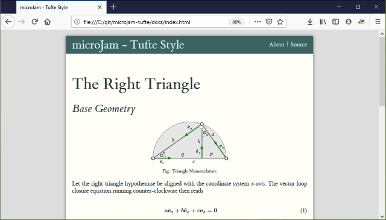

A Minimal Jamstack Approach.
-
μ ... quoi ?
La lettre grecque 'μ' se pronoce 'my' comme micro ou 'mee' selon Grecque moderne . Il suffit donc de l'appeler 'microjam' ou 'myjam'.
-
ok ... myjam ?
Ce 'Jam' dans μJam vient de Jamstack et signifie une collection de trois (03) attributs:
- J avaScript
- A PI
- M arkup
Il s'agit principalement de la création de pages Web statiques ou de sites Web sans serveur vous voudrez peut etre lire plus à propos de cette façon de construire des pages web légères here et ici.
Que puis-je faire avec cela ?
Si vous voulez
- Creer un petit à un moyen site web
- Ecrire le contenu de vos sites web. Pour cela il sera facile d apprende à utiliser Markdown language
- Publier votre page web dans votre GitHub repository et pages GitHub
- Faire tout ceci dans votre éditeur gratuit Visual Studio Code (
vscode)
Dès lors que l'approche minimaliste et puissante de μJam pourrais vous convaincre.

-
ok, comment puis-je essayer votre approche ... μjam ?
il y a de fortes chances que vous ayez deja installé vscode editor.Vous pouvez également le faire plutard et lire d'abord ce qui concerne la création des pages web sur cet exemple repository
Pas à pas par vous meme manuellement en trois (03) étapes simples:
- Un nouveau projet
- Générer le contenu
- Publier au monde
Ainsi commencez avec le guide d'installation μjam .